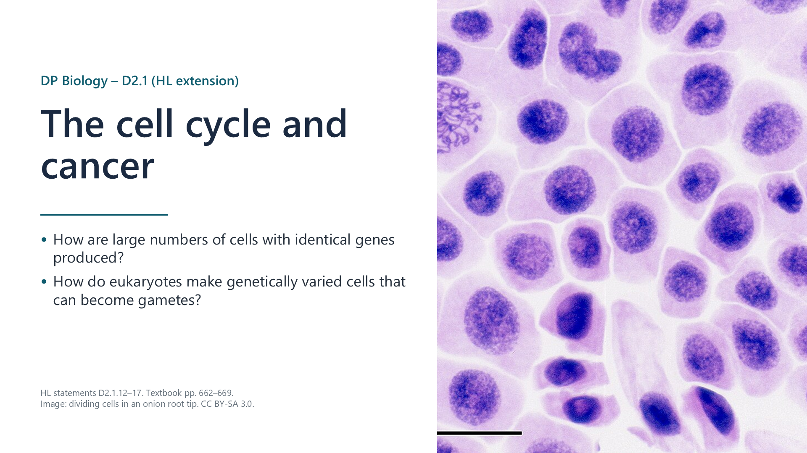
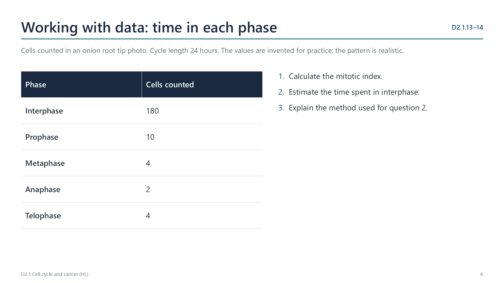
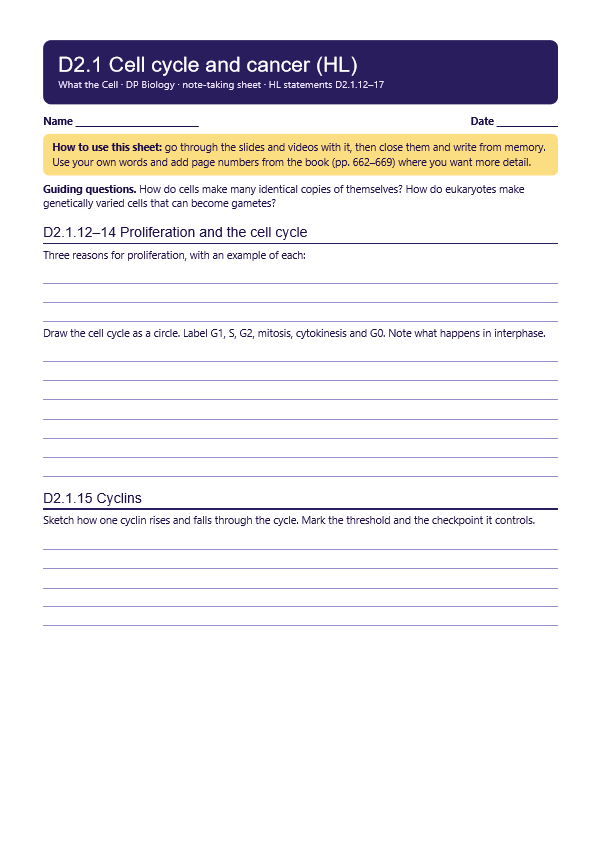
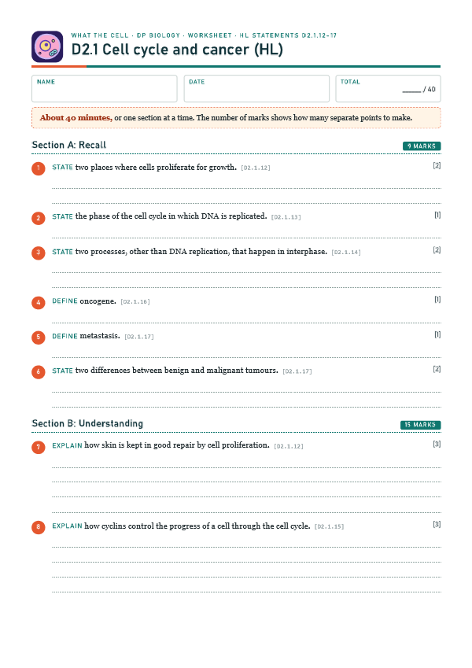

Cell proliferation
pp. 662–663Cells proliferate for growth (plant meristems, early animal embryos), replacement (skin cells made in the basal layer replace those lost at the surface) and repair (healing a wound).

Written for this site from the class slides, with textbook page references for each statement. The chapter is on pages 662–669 of the course textbook. Image credits are on slide 12.
Cells proliferate for growth (plant meristems, early animal embryos), replacement (skin cells made in the basal layer replace those lost at the surface) and repair (healing a wound).
The cycle is interphase (G1, S and G2), then mitosis and cytokinesis. DNA is replicated in S. Some cells leave the cycle and stay in G0.
Interphase is metabolically active: the cell makes proteins and membranes, replicates its DNA, and its mitochondria and chloroplasts grow and divide so each daughter cell receives enough.

Concentrations of different cyclins rise and fall during the cycle. Each activates a cyclin-dependent kinase, and a threshold level of a specific cyclin is needed to pass each checkpoint. The cyclin is then broken down.
Proto-oncogenes stimulate division when signalled; a mutation can turn one into an oncogene that is always active (for example Ras). Tumour suppressor genes stop the cycle if DNA is damaged; mutations that inactivate both copies (for example p53) remove this brake. Either way, cells divide without control.
Benign tumours grow slowly and stay in one place; they are not cancer. Malignant tumours grow fast, invade nearby tissue and can metastasize: cells from the primary tumour travel in blood or lymph and form secondary tumours elsewhere.
Select a video to play it here. Select it again to close it.
Print this guide and complete it as you work through the slides and videos. It asks for your own explanations, so close the notes while you try each section.

The self-check needs JavaScript to run.
A printable worksheet covering all six statements, from quick recall to data questions and a longer answer. It has 40 marks and takes about 40 minutes, or you can do one section at a time.
Your teacher has the mark scheme.

You will need: Prepared slide of root tip, or a micrograph, microscope, tally counter
Safety: Carry microscopes with two hands. Take care with glass slides.
Carry this out with your teacher's supervision and follow your school's lab rules.
Cells taken from Henrietta Lacks in 1951, without her knowledge, became the HeLa line, which has supported countless discoveries about cell division.
HeLa cells have brought huge benefits, but consent was never given. Consider who should benefit from research and who should decide.
Summarised in our own words. Use each code to find the exact wording in your textbook or the IB subject guide.
© 2026 Akash Parthi Bendran. Please ask before using or sharing any resources from this site: see permission to use.